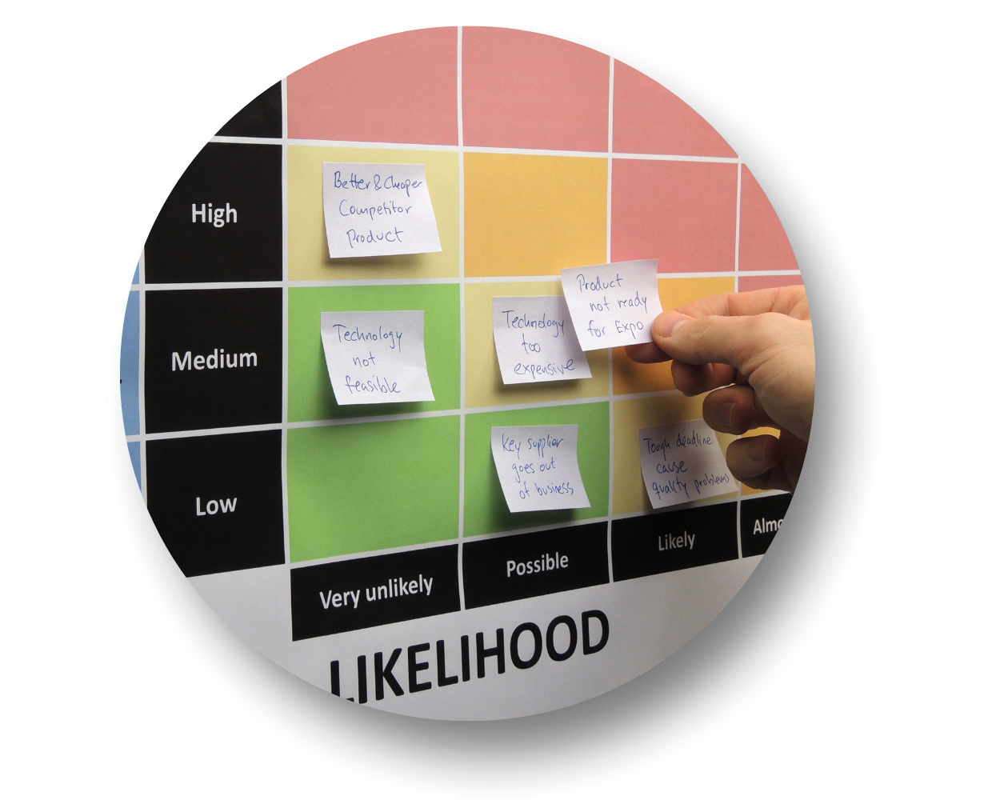

Riskbedömning vid förändringar
Reglerna för systematiskt arbetsmiljöarbete kräver att riskbedömningar görs i samband med förändringar i verksamheten som inte är en del av den dagliga verksamheten.
Exempel på sådana förändringar är:
- Personalförändringar
- Förändringar av arbetsmetoder eller arbetstider
- Om- och nybyggnationer
- Införande av ny arbetsutrustning

Riskbedömningar ska utföras innan förändringar genomförs för att säkerställa att åtgärder kan genomföras i tid. Detta innebär att först kartlägga vad förändringen består av, var den ska genomföras och vilka arbetstagare som berörs.